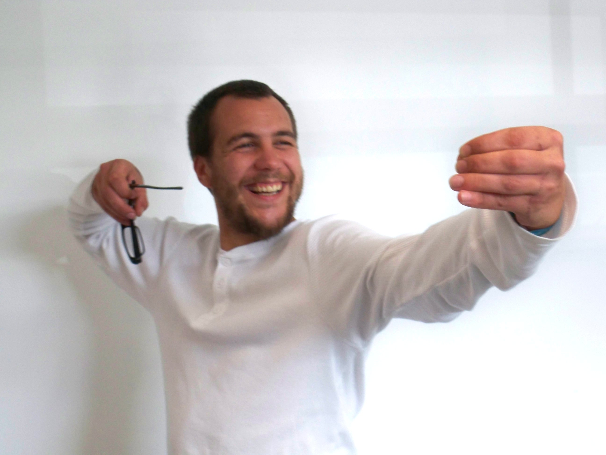

From point to pixel
is as a
"electronic art"
made in 2011-2012 by Mickael Foucaux.
By the technic we can see anothers version following the same Lee Ufan's method.
features
resizable to fit any screen size
easy to use
easy to use
technical informations
use only CSS, jQuery and HTML5
file are organized to improve dialogue between designer and programer
file are organized to improve dialogue between designer and programer
contact
7 Levy Street, Wellington
022-0715106